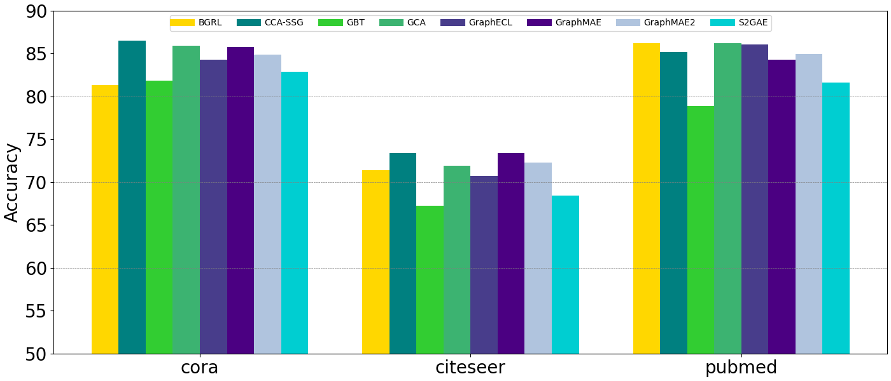
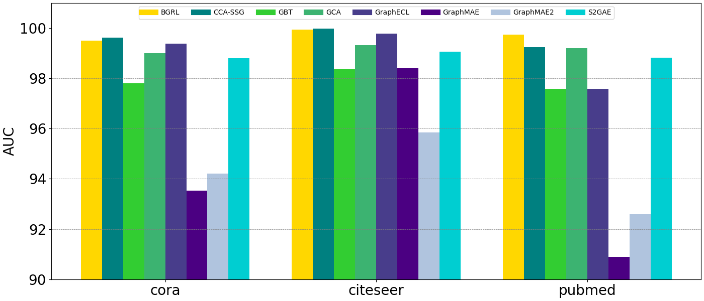
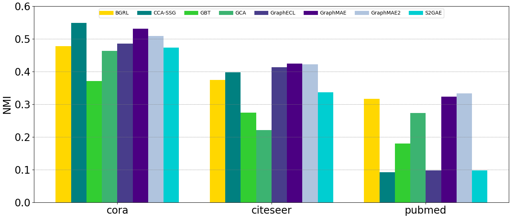

Homogenization
After training GSSL to obtain node representations, GraphFM evaluates three downstream tasks simultaneously: node classification, link prediction, and node clustering.
Thanks to the standardized settings, our reproduced results on full-batch training are generally comparable to or sometimes even higher than those in the original paper.
Generative models (GraphMAE and GraphMAE2) perform poorly on link prediction tasks.
Although generative models (GraphMAE and GraphMAE2) fall short in link prediction, they outperform other baselines in node clustering tasks.